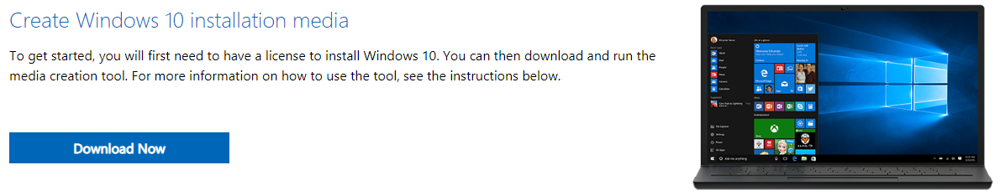
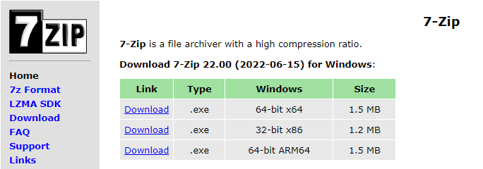
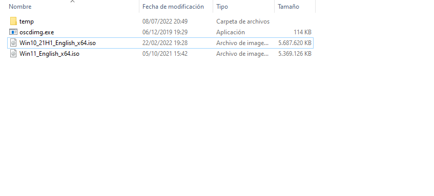
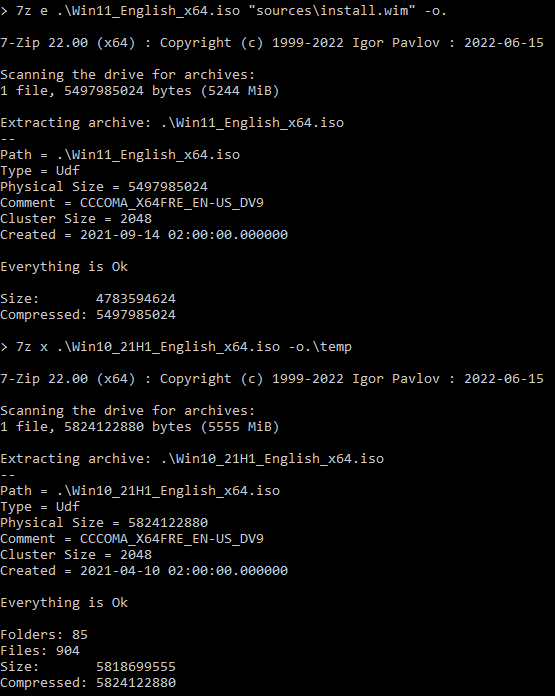
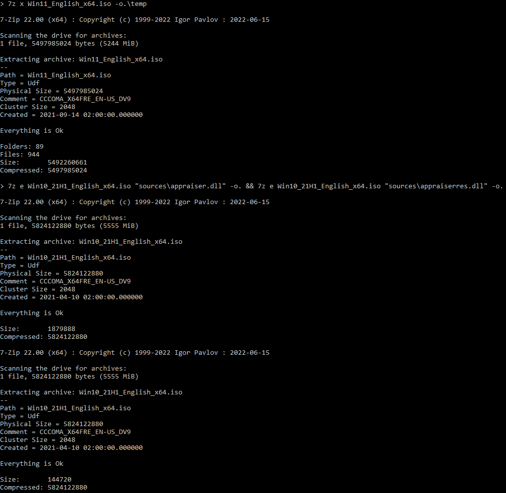
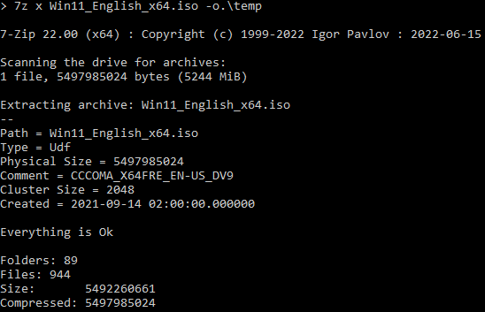
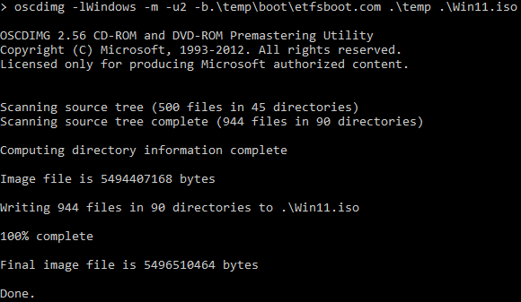
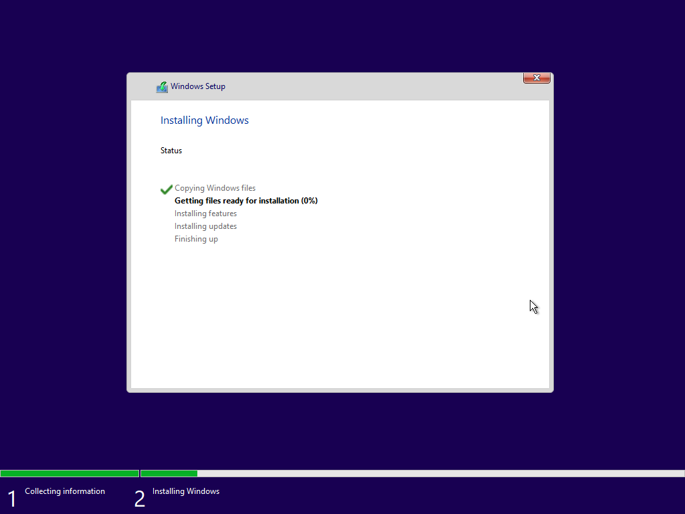

Ces instructions vous guideront dans la création d'un installateur personnalisé.
Pour créer l'installateur personnalisé, vous aurez besoin des prérequis suivants :
Pour télécharger les installateurs de Windows 11 et 10, recherchez "télécharger windows 11" et "télécharger windows 10", ou cliquez sur les liens ci-dessous pour télécharger les deux installateurs :
Cliquez ici pour télécharger Windows 11
Cliquez ici pour télécharger Windows 10
REMARQUE : si vous consultez l'Installateur manuel de Windows 11, les liens s'ouvriront dans une fenêtre d'Internet Explorer.
REMARQUE : vous devez télécharger la version 64 bits des deux installateurs, car Windows 11 UNIQUEMENT prend en charge le matériel 64 bits
Lorsque vous arrivez sur la page de téléchargement de Windows 11, NE cliquez PAS sur le premier bouton. Cela téléchargerait l'assistant d'installation de Windows 11, qui mettrait à niveau votre système actuel vers Windows 11. Au lieu de cela, vous devez cliquer sur le deuxième ou le troisième bouton. Si vous avez déjà téléchargé un installateur Windows 10 dans le passé, choisissez la troisième option, sélectionnez "ISO multi-édition", puis votre langue, et cliquez sur "Télécharger 64 bits". Cette opération permet de télécharger une copie de la dernière version de Windows 11 dans votre dossier Téléchargements.
Si vous n'avez pas d'image Windows 10, vous devrez cliquer sur le deuxième bouton. Cela va télécharger l'outil de création de médias.
REMARQUE : si vous téléchargez le MCT (Outil de création de médias) de Windows 11, vous devrez le faire aussi pour Windows 10
REMARQUE : si vous utilisez un système Windows et que vous souhaitez télécharger Windows 10, vous êtes limité au MCT.
Lorsque l'outil de création de médias est prêt, lancez-le. Son chargement complet prendra un certain temps, car il doit télécharger les fichiers installateurs nécessaires. Une fois qu'il a terminé, acceptez le contrat de licence. Attendez un peu, puis sélectionnez la deuxième option. NE PAS continuer avec la première option, car elle fera la même chose que le téléchargement de l'assistant d'installation : mettre à niveau votre système. Continuez avec les paramètres recommandés, choisissez "fichier ISO", spécifiez un emplacement et attendez que les fichiers soient téléchargés. Une fois le téléchargement terminé, vous disposerez d'un installateur de Windows (11/10) enregistré à l'emplacement spécifié.
Pour télécharger 7-Zip, recherchez ''7-zip'' sur Internet ou visitez 7-zip.org

Téléchargez l'architecture appropriée. Pour une meilleure compatibilité, choisissez 32-bit x86. Notez que la version 32 bits n'utilisera pas toutes les ressources données par un système 64 bits aux autres programmes. Ouvrez l'installateur, et procédez à l'installation.
OSCDIMG fait partie du kit d'évaluation et de déploiement de Windows (ADK). Il s'agit d'un ensemble d'outils conçus pour les administrateurs. L'ADK est livré avec OSCDIMG. Vous pouvez également télécharger OSCDIMG séparément.
OSCDIMG + Windows ADK (Windows 11, 22H2)
Si vous décidez de poursuivre avec la deuxième option, choisissez les valeurs par défaut et attendez l'installation. La première option se présente sous la forme d'un fichier ZIP. Extrayez-le, et vous aurez une copie de OSCDIMG.
Une fois tous les prérequis effectués, vous devrez préparer l'espace de travail, comme vous le feriez pour un atelier. Tout d'abord, créez un répertoire (dossier) dans lequel vous allez enregistrer les images et les outils (ce dernier est facultatif). Vous pouvez lui donner le nom que vous voulez. À l'intérieur de ce répertoire, créez-en un autre. Celui-ci enregistrera les fichiers temporaires de l'installateur. Si vous avez une copie autonome d'OSCDIMG, copiez-la dans le répertoire de travail.
Le résultat final devrait ressembler à ceci :
Vous devez maintenant extraire les fichiers des installateurs. Il est recommandé d'attendre un certain temps, qui peut dépendre des vitesses de lecture et d'écriture du disque.
REMARQUE : les méthodes seront exécutées en ligne de commande, mais elles peuvent être effectuées via l'interface graphique
OPTIONNEL : ajouter 7-Zip à %path%
Si vous souhaitez utiliser la ligne de commande, un moyen plus facile d'accéder à 7-Zip est de l'ajouter à la liste des éléments suivants %path%. Pour cela, tapez : path %path%;"\Program Files\7-Zip"
Pour extraire les fichiers de l'installateur à l'aide de cette méthode, préparez une fenêtre d'invite de commande (cmd), et tapez :
7z e [chemin de l'installateur source] "sources\install.wim" -o.
* Remplacez [chemin de l'installateur source] par le chemin de l'installateur de la source Windows 11. Si cela n'extrait rien, essayez de remplacer install.wim par install.esd.
Après cette commande, tapez :
7z x [chemin de l'installateur source] -o.\temp
* Remplacez [chemin de l'installateur source] par le chemin de l'installateur de la source Windows 10.
La sortie de la commande devrait ressembler à ceci :
Pour extraire les fichiers de l'installateur à l'aide de cette méthode, préparez une fenêtre d'invite de commande (cmd), et tapez :
7z x [chemin de l'installateur source] -o.\temp
* Remplacez [chemin de l'installateur source] par le chemin de l'installateur de la source Windows 11.
Après cette commande, tapez:
7z e [chemin de l'installateur source] "sources\appraiser.dll" -o. && 7z e [chemin de l'installateur source] "sources\appraiserres.dll" -o.
* Remplacez [chemin de l'installateur source] par le chemin de l'installateur de la source Windows 10.
La sortie de la commande devrait ressembler à ceci :
Pour extraire les fichiers de l'installateur en utilisant cette méthode, préparez une fenêtre d'invite de commande (cmd) élevée (ce qui signifie que vous devez l'exécuter comme administrateur), et tapez:
7z x [chemin de l'installateur source] -o.\temp
* Remplacez [chemin de l'installateur source] par le chemin de l'installateur de la source Windows 11.
La sortie de la commande devrait ressembler à ceci :
Voici la partie amusante : modifier les fichiers de l'installateur.
Pour modifier l'installateur en utilisant cette méthode, vous devrez effectuer les tâches suivantes :
install.wim (ou install.esd si présent) du répertoire temporaire en tapant : del .\temp\sources\install(.wim/.esd)install.wim ou install.esd vers temp\sources en tapant : Déplace /y install(.wim/.esd) .\temp\sourcesPour modifier l'installateur en utilisant cette méthode, vous devrez effectuer les tâches suivantes :
appraiser.dll and appraiserres.dll from temp\sources en tapant : del .\temp\sources\appraiser.dll && del .\temp\sources\appraiserres.dlltemp\sources en tapant : Déplace /y *.dll .\temp\sourcesREMARQUE : vous aurez besoin d'une fenêtre Command Prompt comme administrateur
Pour modifier l'installateur en utilisant cette méthode, vous devrez effectuer les tâches suivantes :
wimmountdism /mount-wim /wimfile=.\temp\sources\boot.wim /index=2 /mountdir=.\wimmountSYSTEM. Pour cela, tapez reg load HKLM\W11SYS .\wimmount\system32\config\SYSTEMLabConfig. Pour cela, tapez reg add HKLM\W11SYS\Setup\LabConfigLabConfig: BypassCPUCheck, type: REG_DWORD, valeur : 1: reg add HKLM\W11SYS\Setup\LabConfig /v BypassCPUCheck /t REG_DWORD /d 1BypassRAMCheck, type: REG_DWORD, valeur : 1: reg add HKLM\W11SYS\Setup\LabConfig /v BypassRAMCheck /t REG_DWORD /d 1BypassSecureBootCheck, type: REG_DWORD, valeur : 1: reg add HKLM\W11SYS\Setup\LabConfig /v BypassSecureBootCheck /t REG_DWORD /d 1BypassTPMCheck, type: REG_DWORD, valeur : 1: reg add HKLM\W11SYS\Setup\LabConfig /v BypassTPMCheck /t REG_DWORD /d 1BypassStorageCheck, type: REG_DWORD, valeur : 1: reg add HKLM\W11SYS\Setup\LabConfig /v BypassStorageCheck /t REG_DWORD /d 1SYSTEM: reg unload HKLM\W11SYSdism /unmount-wim /mountdir=.\wimmount /commitREMARQUE : you must close all processes that show the mount point, or else you will not be able to unmount the image
wimmount: rd .\wimmount /s /qAprès avoir modifié les fichiers de l'installateur, vous devez le créer. Pour ce faire, exécutez cette commande :
oscdimg -l[étiquette de l'image] -m -u2 -b.\temp\boot\etfsboot.com .\temp [Chemin de l'installateur cible]
* Remplacez [étiquette de l'image] par l'étiquette que vous voulez. Il ne doit y avoir AUCUN espace entre -l et l'étiquette désirée, et l'étiquette ne doir pas dépasser 32 caractères.
* Si vous créez un installateur pour un périphérique dont l'amorçage automatique est désactivé, vous devez remplacer -b.\temp\boot\etfsboot.com par -b.\temp\boot\Efisys.bin -pEF, si présent
* Remplacez [Chemin de l'installateur cible] par le chemin de l'installateur cible.
* Si vous avez installé l'ADK, remplacez oscdimg par "\Program Files (x86)\Windows Kits\10\Assessment and Deployment Kit\Deployment Tools\x86\Oscdimg\oscdimg.exe" ou ajoutez "\Program Files (x86)\Windows Kits\10\Assessment and Deployment Kit\Deployment Tools\x86\Oscdimg" à %PATH%: path %path%;"\Program Files (x86)\Windows Kits\10\Assessment and Deployment Kit\Deployment Tools\x86\Oscdimg"
La syntaxe doit ressembler à ceci :
Une fois l'image créée, n'hésitez pas à supprimer tous les fichiers temporaires et à récupérer l'espace disque.
Tout comme le processus de test d'un microphone, vous devrez tester votre installateur personnalisé après sa création. Vous n'avez pas besoin de dire "Test, 1, 2, 3" pour tester l'image. Pour la tester :
Vous devrez télécharger balenaEtcher ou Rufus pour mettre l'installateur sur une clé USB que vous pourrez emporter partout. Si tout se passe bien, vous pouvez maintenant installer Windows 11.
